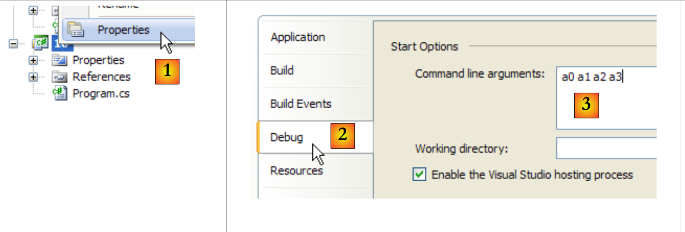

3. أساسيات لغة C#
3.1. مقدمة
سنبدأ بالتعامل مع C# كلغة برمجة كلاسيكية. وسنتناول الفئات لاحقًا. هناك عنصران في البرنامج:
- البيانات
- التعليمات التي تتعامل معها
نحاول عمومًا فصل البيانات عن التعليمات:
 |
3.2. بيانات C#
تستخدم لغة C# أنواع البيانات التالية:
- الأعداد الصحيحة
- الأعداد الحقيقية
- الأعداد العشرية
- الأحرف والسلاسل
- القيم المنطقية
- الكائنات
3.2.1. أنواع البيانات المحددة مسبقًا
نوع C# | نوع .NET | البيانات الممثلة | اللاحقة القيم الحرفية | الترميز | مجال القيمة |
حرف (حرف) | حرف | 2 بايت | حرف يونيكود (UTF-16) | ||
سلسلة (C) | سلسلة أحرف | إشارة إلى تسلسل أحرف Unicode | |||
Int32 (S) | عدد صحيح | 4 بايت | [-231, 231-1] [-2147483648, 2147483647] | ||
UInt32 (S) | .. | U | 4 بايت | [0، 232-1] [0، 4294967295] | |
Int64 (S) | .. | L | 8 بايت | [-263, 263 -1] [-9223372036854775808, 9223372036854775807] | |
UInt64 (S) | .. | UL | 8 بايت | [0، 264 -1] [0، 18446744073709551615] | |
.. | 1 بايت | [-27 ، 27 -1] [-128،+127] | |||
بايت (S) | .. | 1 بايت | [0 , 28 -1] [0,255] | ||
Int16 (S) | .. | 2 بايت | [-215, 215-1] [-32768, 32767] | ||
UInt16 (S) | .. | 2 بايت | [0، 216-1] [0،65535] | ||
عدد حقيقي أحادي (S) | عدد حقيقي | F | 4 بايت | [1.5 × 10⁻⁴⁵، 3.4 × 10³⁸ بالقيم المطلقة | |
مزدوج (S) | .. | D | 8 بايت | [-1.7 × 10³⁰⁸، 1.7 × 10³⁰⁸ بالقيم المطلقة | |
عشري (S) | رقم عشري | M | 16 بايت | [1.0 10⁻²⁸, 7.9 10⁺²⁸] بالقيمة المطلقة مع 28 رقمًا معنويًا | |
منطقية (S) | .. | 1 بايت | صحيح، خطأ | ||
كائن (C) | مرجع الكائن | مرجع الكائن |
فيما سبق، تمت الإشارة إلى أنواع C# بنوع .NET المكافئ لها، مع التعليق (S) إذا كان النوع عبارة عن بنية و(C) إذا كان النوع عبارة عن فئة. وقد تبين أن هناك نوعين محتملين لعدد صحيح 32 بت: int و Int32. النوع int هو نوع C#. Int32 هي بنية تنتمي إلى System. اسمها الكامل هو System.Int32. النوع int هو اسم مستعار في C# للبنية .NET System.Int32. وبالمثل، فإن سلسلة C# هي اسم مستعار للنوع .NET System.String. System.String هي فئة وليست بنية. المفهومان متشابهان، ولكن مع الاختلاف الأساسي التالي:
- يمكن معالجة متغير من النوع Structure عبر قيمته
- يمكن معالجة متغير من النوع Class عبر عنوانه (مرجع في لغة الكائنات).
البنية كفئة هي أنواع معقدة ذات سمات وأساليب. على سبيل المثال، يمكننا كتابة:
ما ورد أعلاه هو القيمة الثابتة 3 التي تعتبر في C# بشكل افتراضي من النوع int، من نوع .NET System.Int32. تحتوي هذه البنية على دالة GetType() التي تعرض كائنًا يغلف خصائص نوع البيانات System.Int32. وتشمل هذه الخصائص الخاصية FullName التي تُرجع الاسم الكامل للنوع. كما ترى، فإن القيمة الثابتة 3 أكثر تعقيدًا مما تبدو عليه في البداية.
فيما يلي برنامج يوضح هذه النقاط:
using System;
namespace Chap1 {
class P00 {
static void Main(string[] args) {
// example 1
int ent = 2;
float fl = 10.5F;
double d = -4.6;
string s = "essai";
uint ui = 5;
long l = 1000;
ulong ul = 1001;
byte octet = 5;
short sh = -4;
ushort ush = 10;
decimal dec = 10.67M;
bool b = true;
Console.WriteLine("Type de ent[{1}] : [{0},{2}]", ent.GetType().FullName, ent,sizeof(int));
Console.WriteLine("Type de fl[{1}]: [{0},{2}]", fl.GetType().FullName, fl, sizeof(float));
Console.WriteLine("Type de d[{1}] : [{0},{2}]", d.GetType().FullName, d, sizeof(double));
Console.WriteLine("Type de s[{1}] : [{0}]", s.GetType().FullName, s);
Console.WriteLine("Type de ui[{1}] : [{0},{2}]", ui.GetType().FullName, ui, sizeof(uint));
Console.WriteLine("Type de l[{1}] : [{0},{2}]", l.GetType().FullName, l, sizeof(long));
Console.WriteLine("Type de ul[{1}] : [{0},{2}]", ul.GetType().FullName, ul, sizeof(ulong));
Console.WriteLine("Type de b[{1}] : [{0},{2}]", octet.GetType().FullName, octet, sizeof(byte));
Console.WriteLine("Type de sh[{1}] : [{0},{2}]", sh.GetType().FullName, sh, sizeof(short));
Console.WriteLine("Type de ush[{1}] : [{0},{2}]", ush.GetType().FullName, ush, sizeof(ushort));
Console.WriteLine("Type de dec[{1}] : [{0},{2}]", dec.GetType().FullName, dec, sizeof(decimal));
Console.WriteLine("Type de b[{1}] : [{0},{2}]", b.GetType().FullName, b, sizeof(bool));
}
}
}
- السطر 7: إعلان متغير عدد صحيح
- السطر 19: يمكن الحصول على نوع المتغير v بواسطة v.GetType().FullName. يمكن الحصول على حجم بنية S بواسطة sizeof(S). تعليمة Console.WriteLine("... {0} ... {1} ...", param0, param1, ...) تكتب على الشاشة النص الذي يمثل المعلمة الأولى، مع استبدال كل رمز {i} بقيمة التعبير parami.
- السطر 22: لا يمكن استخدام عامل النوع string، لأنه يشير إلى فئة وليس إلى بنية sizeof.
إليك النتيجة:
تعرض الشاشة أنواع .NET، وليس أسماء مستعارة لـ C#.
3.2.2. ترميز البيانات الحرفية
145، -7، 0xFF (سداسي عشري) | |
100000L | |
134.789، -45E-18 (-45 × 10⁻¹⁸) | |
134.789F، -45E-18F (-45 × 10⁻¹⁸) | |
100000M | |
'A'، 'b' | |
"اليوم" "c:\chap1\paragraph3" @"c:\chap1\paragraph3" | |
صحيح، خطأ | |
new DateTime(1954,10,13) (السنة، الشهر، اليوم) لـ 13/10/1954 |
لاحظ السلسلتين الحرفيتين: "c:\chap1\\paragraph3" و @"c:\chap1\paragraph3". في السلاسل الحرفية، يتم تفسير الحرف \. وبالتالي، فإن "\n" يمثل علامة نهاية السطر وليس تسلسل الحرفين \ و n. وإذا أردنا هذا التسلسل، فسيتعين علينا كتابة "\\n" حيث يُفسر التسلسل على أنه حرف \ واحد. يمكنك أيضًا كتابة @"\n" للحصول على نفس النتيجة. تتطلب صيغة @"text" أن يؤخذ النص بالضبط كما هو مكتوب. ويُطلق على هذا أحيانًا اسم السلسلة الحرفية.
3.2.3. إعداد تقارير البيانات
3.2.3.1. دور الإعلانات
يقوم البرنامج بمعالجة البيانات التي تتميز باسم ونوع. يتم تخزين هذه البيانات في الذاكرة. عند ترجمة البرنامج، يقوم المُترجم بتعيين موقع ذاكرة لكل عنصر من عناصر البيانات يتميز بعنوان وحجم. ويقوم بذلك بمساعدة الإعلانات التي يقوم بها المبرمج.
كما أنها تمكّن المُترجم من اكتشاف أخطاء البرمجة. على سبيل المثال،
x=x*2;
سيتم إعلانها على أنها خاطئة إذا كان x سلسلة، على سبيل المثال.
3.2.3.2. إعلان الثوابت
صيغة إعلان الثابت هي كما يلي:
على سبيل المثال:
لماذا نعلن الثوابت؟
- سيكون البرنامج أسهل في القراءة إذا أُعطيت الثابتة اسمًا ذي معنى:
- سيكون تعديل البرنامج أسهل إذا تغيرت "الثابتة". على سبيل المثال، في الحالة السابقة، إذا تغير معدل ضريبة القيمة المضافة إلى 33٪، فإن التعديل الوحيد الذي يجب إجراؤه هو تعديل التعليمات التي تحدد قيمتها:
إذا تم استخدام 0.186 بشكل صريح في البرنامج، فسيتعين تعديل العديد من التعليمات.
3.2.3.3. إعلان المتغير
يتم تحديد المتغير بواسطة اسم ويشير إلى نوع البيانات. لغة C# حساسة لحالة الأحرف. وبالتالي فإن FIN و end مختلفان.
يمكن تهيئة المتغيرات عند إعلانها. صيغة إعلان متغير واحد أو أكثر هي:
حيث يكون Identificateur_de_type إما نوعًا محددًا مسبقًا أو نوعًا محددًا من قبل المبرمج. اختياريًا، يمكن تهيئة المتغير بالإضافة إلى إعلانه.
يمكنك أيضًا تجنب تحديد النوع الدقيق للمتغير باستخدام الكلمة الرئيسية var بدلاً من Identificateur_de_type :
الكلمة الرئيسية var لا تعني أن المتغيرات ليس لها نوع محدد. المتغير variablei له نوع البيانات valuei المخصص له. التهيئة هنا إلزامية حتى يتمكن المُترجم من استنتاج نوع المتغير.
إليك مثال:
using System;
namespace Chap1 {
class P00 {
static void Main(string[] args) {
int i=2;
Console.WriteLine("Type de int i=2 : {0},{1}",i.GetType().Name,i.GetType().FullName);
var j = 3;
Console.WriteLine("Type de var j=3 : {0},{1}", j.GetType().Name, j.GetType().FullName);
var aujourdhui = DateTime.Now;
Console.WriteLine("Type de var aujourdhui : {0},{1}", aujourdhui.GetType().Name, aujourdhui.GetType().FullName);
}
}
}
- السطر 6: بيانات مكتوبة بشكل صريح
- السطر 7: (data).GetType().Name هو الاسم المختصر لـ (data)، و(data).GetType().FullName هو الاسم الكامل لـ (data)
- السطر 8: بيانات مكتوبة ضمناً. لأن 3 من النوع int، فإن j سيكون من النوع int.
- السطر 10: بيانات مكتوبة ضمناً. لأن نوع DateTime.Now هو DateTime، فإن نوع today سيكون DateTime.
عند التنفيذ، نحصل على النتيجة التالية:
لا يمكن تغيير نوع المتغير الذي تم تعريفه ضمناً باستخدام الكلمة الرئيسية var. على سبيل المثال، بعد السطر 10 من الكود، السطر:
var aujourdhui = "aujourd'hui";
سنرى لاحقًا أنه من الممكن إعلان نوع "أثناء التشغيل" في تعبير. في هذه الحالة، يكون نوعًا مجهولًا، وهو نوع لم يطلق عليه المستخدم اسمًا. سيقوم المُترجم بإعطاء هذا النوع الجديد اسمًا. إذا كان من المقرر تعيين نوع مجهول لمتغير، فإن الطريقة الوحيدة لإعلانه هي استخدام الكلمة الرئيسية var.
3.2.4. التحويلات بين الأرقام والسلاسل
nombre.ToString() | |
int.Parse(string) أو System.Int32.Parse | |
long.Parse(string) أو System.Int64.Parse | |
double.Parse(string) أو System.Double.Parse(string) | |
float.Parse(string) أو System.Float.Parse(string) |
قد يفشل تحويل سلسلة إلى رقم إذا كانت السلسلة لا تمثل رقمًا صالحًا. خطأ فادح يُسمى استثناء. يمكن معالجة هذا الخطأ باستخدام try/catch التالي:
try{
appel de la fonction susceptible de générer l'exception
} catch (Exception e){
traiter l'exception e
}
instruction suivante
إذا لم تُحدث الدالة استثناءً، ننتقل إلى التعليمات التالية، وإلا فإننا ننتقل إلى نص جملة catch ثم إلى التعليمات التالية. سنعود إلى معالجة الاستثناءات لاحقًا. إليك برنامج يوضح بعض التقنيات للتحويل بين الأرقام والسلاسل النصية. في هذا المثال، تقوم الدالة poster بكتابة قيمة معلمتها على الشاشة. وبالتالي، فإن poster(S) تكتب قيمة S على الشاشة، حيث يكون S من النوع string.
using System;
namespace Chap1 {
class P01 {
static void Main(string[] args) {
// data
const int i = 10;
const long l = 100000;
const float f = 45.78F;
double d = -14.98;
// number --> string
affiche(i.ToString());
affiche(l.ToString());
affiche(f.ToString());
affiche(d.ToString());
//boolean --> string
const bool b = false;
affiche(b.ToString());
// string --> int
int i1;
i1 = int.Parse("10");
affiche(i1.ToString());
try {
i1 = int.Parse("10.67");
affiche(i1.ToString());
} catch (Exception e) {
affiche("Erreur : " + e.Message);
}
// chain --> long
long l1;
l1 = long.Parse("100");
affiche(l1.ToString());
try {
l1 = long.Parse("10.675");
affiche(l1.ToString());
} catch (Exception e) {
affiche("Erreur : " + e.Message);
}
// chain --> double
double d1;
d1 = double.Parse("100,87");
affiche(d1.ToString());
try {
d1 = double.Parse("abcd");
affiche(d1.ToString());
} catch (Exception e) {
affiche("Erreur : " + e.Message);
}
// string --> float
float f1;
f1 = float.Parse("100,87");
affiche(f1.ToString());
try {
d1 = float.Parse("abcd");
affiche(f1.ToString());
} catch (Exception e) {
affiche("Erreur : " + e.Message);
}
}// fine hand
public static void affiche(string S) {
Console.Out.WriteLine("S={0}",S);
}
}// end of class
}
تتعامل الأسطر 30-32 مع الاستثناء المحتمل الذي قد يحدث. e.Message هي رسالة الخطأ المرتبطة بالاستثناء e.
والنتائج هي كما يلي:
لاحظ أن الأعداد الحقيقية في شكل سلسلة يجب أن تستخدم الفاصلة وليس النقطة العشرية. وبالتالي، نكتب
ولكن
3.2.5. جداول البيانات
مصفوفة C# هي كائن يُستخدم لتجميع البيانات من نفس النوع تحت نفس المعرف. ويتم تعريفها على النحو التالي:
n هو عدد عناصر البيانات التي يمكن أن يحتوي عليها المصفوف. تحدد صيغة Table[i] البيانات رقم i حيث ينتمي i إلى الفاصل [0,n-1]. أي إشارة إلى البيانات Table[i] حيث لا ينتمي i إلى الفاصل [0,n-1] ستؤدي إلى حدوث استثناء. يمكن تهيئة المصفوف وكذلك إعلانه:
أو ببساطة:
تحتوي المصفوفات على خاصية Length وهي عدد العناصر الموجودة في المصفوفة.
يمكن تعريف صورة ثنائية الأبعاد على النحو التالي:
Type[,] array=new Type[n,m];
حيث n هو عدد الصفوف، و m هو عدد الأعمدة. تشير صيغة Table[i,j] إلى العنصر j في الصف i من الجدول. يمكن أيضًا تهيئة المصفوفة ثنائية الأبعاد في نفس وقت تعريفها:
أو ببساطة:
يمكن الحصول على عدد العناصر في كل بُعد باستخدام GetLength(i) حيث يمثل i=0 البُعد المقابل للمؤشر الأول، و i=1 البُعد المقابل للمؤشر الثاني، ...
يتم الحصول على العدد الإجمالي للأبعاد باستخدام الخاصية Rank، والعدد الإجمالي للعناصر باستخدام Length.
يتم إعلان جدول الجداول على النحو التالي:
Type[][] array=new Type[n][];
يُنشئ البيان أعلاه مصفوفة من n صفوف. كل عنصر table[i] هو مرجع مصفوفة أحادي البعد. لا يتم تهيئة هذه المراجع array[i] في الإعلان أعلاه. قيمتها هي المرجع null.
يوضح المثال التالي إنشاء مصفوفة من الجداول:
// un tableau de tableaux
string[][] noms = new string[3][];
for (int i = 0; i < noms.Length; i++) {
noms[i] = new string[i + 1];
}//for
// initialisation
for (int i = 0; i < noms.Length; i++) {
for (int j = 0; j < noms[i].Length; j++) {
noms[i][j] = "nom" + i + j;
}//for j
}//for i
- السطر 2: جدول «names» يتكون من 3 مصفوفات من نوع string[][]. كل عنصر هو مؤشر إلى مصفوفة (إشارة إلى كائن) تتكون عناصرها من نوع string[].
- السطور 3-5: يتم تهيئة العناصر الثلاثة للجدول names. كل عنصر "يشير" الآن إلى مصفوفة من العناصر من النوع string[]. names[i][j] هو الجدول من النوع string[] الذي يشير إليه names[i].
- السطر 9: تهيئة العنصر names[i][j] داخل حلقة مزدوجة. هنا names[i] هو مصفوفة من i+1 عنصر. وبما أن names[i] هو مصفوفة، فإن names[i].Length هو عدد عناصرها.
فيما يلي مثال على الأنواع الثلاثة من الجداول التي عرضناها للتو:
using System;
namespace Chap1 {
// tables
using System;
// test class
public class P02 {
public static void Main() {
// an initialized 1-dimensional array
int[] entiers = new int[] { 0, 10, 20, 30 };
for (int i = 0; i < entiers.Length; i++) {
Console.Out.WriteLine("entiers[{0}]={1}", i, entiers[i]);
}//for
// an initialized 2-dimensional array
double[,] réels = new double[,] { { 0.5, 1.7 }, { 8.4, -6 } };
for (int i = 0; i < réels.GetLength(0); i++) {
for (int j = 0; j < réels.GetLength(1); j++) {
Console.Out.WriteLine("réels[{0},{1}]={2}", i, j, réels[i, j]);
}//for j
}//for i
// a table of tables
string[][] noms = new string[3][];
for (int i = 0; i < noms.Length; i++) {
noms[i] = new string[i + 1];
}//for
// initialization
for (int i = 0; i < noms.Length; i++) {
for (int j = 0; j < noms[i].Length; j++) {
noms[i][j] = "nom" + i + j;
}//for j
}//for i
// display
for (int i = 0; i < noms.Length; i++) {
for (int j = 0; j < noms[i].Length; j++) {
Console.Out.WriteLine("noms[{0}][{1}]={2}", i, j, noms[i][j]);
}//for j
}//for i
}//Main
}//class
}//namespace
عند التنفيذ، نحصل على النتائج التالية:
3.3. تعليمات C# الأساسية
يتم التمييز بين
1 الأوامر الأولية التي ينفذها الكمبيوتر.
2 تعليمات للتحكم في تسلسل البرنامج.
تتضح التعليمات الأولية عند النظر إلى بنية الحاسوب الصغير وأجهزته الطرفية.
 |
-
قراءة المعلومات من لوحة المفاتيح
-
معالجة المعلومات
-
كتابة المعلومات على الشاشة
3.3.1. الكتابة على الشاشة
هناك تعليمات مختلفة للكتابة على الشاشة:
Console.Out.WriteLine(expression)
Console.WriteLine(expression)
Console.Error.WriteLine (expression)
حيث التعبير هو أي نوع من البيانات يمكن تحويله إلى سلسلة لعرضه على الشاشة. تحتوي جميع كائنات C# أو .NET على دالة ToString() تُستخدم لإجراء هذا التحويل.
تتيح فئة System.Console الوصول إلى عمليات الكتابة على الشاشة (Write، WriteLine). تحتوي فئة Console على خاصيتين هما Out و Error اللتين تمثلان تدفق الكتابة من نوع TextWriter :
- Console.WriteLine() تعادل Console.Out.WriteLine() وتكتب على Out المرتبط عادةً بالشاشة.
- تكتب Console.Error.WriteLine() على دفق Error، الذي يرتبط عادةً بالشاشة.
يمكن إعادة توجيه تدفقات Out و Error إلى ملفات نصية أثناء تشغيل البرنامج، كما سنرى بعد قليل.
3.3.2. قراءة البيانات المكتوبة
يتم تعيين دفق البيانات من لوحة المفاتيح بواسطة الكائن Console.In من النوع TextReader. يمكن استخدام هذا النوع من الكائنات لقراءة سطر من النص باستخدام ReadLine :
توفر فئة Console طريقة ReadLine مرتبطة افتراضيًا بـ In. وبالتالي يمكننا كتابة:
يتم تخزين السطر الذي تمت كتابته على لوحة المفاتيح في المتغير ligne ويمكن بعد ذلك استخدامه بواسطة البرنامج. يمكن إعادة توجيه الدفق In إلى ملف، مثل Out و Error.
3.3.3. مثال على الإدخال والإخراج
فيما يلي برنامج قصير لتوضيح عمليات الإدخال/الإخراج للوحة المفاتيح/الشاشة:
using System;
namespace Chap1 {
// test class
public class P03 {
public static void Main() {
// write to Out feed
object obj = new object();
Console.Out.WriteLine(obj);
// write to the Error stream
int i = 10;
Console.Error.WriteLine("i=" + i);
// reading a line entered on the keyboard
Console.Write("Tapez une ligne : ");
string ligne = Console.ReadLine();
Console.WriteLine("ligne={0}", ligne);
}//fine hand
}//end of class
}
- السطر 9: obj هو مرجع كائن
- السطر 10: يتم كتابة obj على الشاشة. بشكل افتراضي، يتم استدعاء obj.ToString().
- السطر 14: يمكنك أيضًا كتابة:
Console.Error.WriteLine("i={0}",i);
المعلمة الأولى "i={0}" هي تنسيق العرض، والمعلمات الأخرى هي التعبيرات المراد عرضها. عناصر {n} هي معلمات "موضعية". في وقت التشغيل، يتم استبدال المعلمة {n} بقيمة التعبير رقم n.
والنتيجة هي كما يلي:
- السطر 1: العرض الناتج عن السطر 10 من الكود. عرضت وظيفة obj.ToString() اسم نوع المتغير obj: System.Object. نوع object هو اسم مستعار في C# لنوع .NET System.Object.
3.3.4. إعادة توجيه الإدخال/الإخراج
في نظامي DOS و UNIX، توجد ثلاثة أجهزة قياسية تسمى:
- جهاز الإدخال القياسي - يكون افتراضيًا لوحة المفاتيح ويحمل الرقم 0
- جهاز الإخراج القياسي - يكون افتراضيًا هو الشاشة ويحمل الرقم 1
- جهاز الخطأ القياسي - يكون افتراضيًا هو الشاشة ويحمل الرقم 2
في C#، يكتب Console.Out إلى الجهاز 1، ويتم كتابة دفق الكتابة Console.Error إلى الجهاز 2، ويقرأ دفق القراءة Console.In البيانات من الجهاز 0.
عند تشغيل برنامج في نظام Dos أو Unix، يمكنك تحديد الأجهزة 0 و 1 و 2 التي سيتم استخدامها للبرنامج الذي يتم تنفيذه. انظر إلى سطر الأوامر التالي:
ووفقًا لبرنامج argi pg، يمكن إعادة توجيه أجهزة الإدخال/الإخراج القياسية إلى ملفات:
يتم إعادة توجيه دفق الإدخال القياسي رقم 0 إلى in.txt. في البرنامج، سيأخذ Console.In بياناته من in.txt. | |
يعيد توجيه الإخراج رقم 1 إلى الملف out.txt. وهذا يعني أن Console.Out في البرنامج سيكتب بياناته إلى الملف out.txt | |
كما سبق، ولكن البيانات المكتوبة تضاف إلى محتويات الملف الحالي out.txt. | |
يعيد توجيه المخرج رقم 2 إلى الملف error.txt. وهذا يعني أن Console.Error في البرنامج ستكتب بياناتها إلى الملف error.txt | |
كما سبق، ولكن البيانات المكتوبة تضاف إلى محتويات الملف الحالي error.txt. | |
يتم إعادة توجيه الجهازين 1 و 2 إلى |
لاحظ أنه لإعادة توجيه تدفقات الإدخال/الإخراج من pg إلى الملفات، لا يلزم تعديل pg. يحدد نظام التشغيل طبيعة الأجهزة الطرفية 0 و 1 و 2. انظر البرنامج التالي:
using System;
namespace Chap1 {
// redirections
public class P04 {
public static void Main(string[] args) {
// lecture flux In
string data = Console.In.ReadLine();
// write Out feed
Console.Out.WriteLine("écriture dans flux Out : " + data);
// écriture flux Error
Console.Error.WriteLine("écriture dans flux Error : " + data);
}//Main
}//class
}
لنقم بإنشاء الملف القابل للتنفيذ لهذا الكود المصدري:
 |
- في [1]: يتم إنشاء الملف القابل للتنفيذ بالنقر بزر الماوس الأيمن على المشروع / Build
- في [2]: في نافذة DOS، تم إنشاء الملف القابل للتنفيذ 04.exe في مجلد bin/Release الخاص بالمشروع.
دعونا نصدر الأوامر التالية في نافذة DOS [2]:
- السطر 1: السلسلة test في ملف in.txt
- السطران 2-3: عرض محتويات ملف in.txt للتحقق
- السطر 4: تنفيذ البرنامج 04.exe. يتم إعادة توجيه التدفق In إلى in.txt، والتدفق Out إلى out.txt، والتدفق Error إلى err.txt. لا يؤدي التنفيذ إلى أي عرض.
- السطران 5-6: محتويات ملف out.txt. يوضح لنا هذا المحتوى ما يلي:
- تمت قراءة الملف in.txt
- تمت إعادة توجيه عرض الشاشة إلى out.txt
- السطران 7-8: فحص مماثل لملف err.txt
يمكننا أن نرى بوضوح أن التدفقين Out و In لا يكتبان إلى نفس الأجهزة، حيث تمت إعادة توجيههما بشكل منفصل.
3.3.5. تعيين قيمة تعبير إلى متغير
نحن مهتمون هنا بالعملية variable=expression;
يمكن أن يكون التعبير من النوع: حسابي، علائقي، منطقي، أحرف
3.3.5.1. تفسير عملية التعيين
العملية variable=expression;
هي في حد ذاتها تعبير يتم تقييمه على النحو التالي:
- يتم تقييم الطرف الأيمن من عملية التعيين: والنتيجة هي قيمة V.
- يتم تعيين القيمة V للمتغير
- قيمة V هي أيضًا قيمة التعيين، والتي يُنظر إليها هذه المرة على أنها تعبير.
هذه هي الطريقة التي
صحيحًا. وبسبب الأسبقية، سيتم تقييم عامل = الموجود في أقصى اليمين. وبالتالي نحصل على
يتم تقييم التعبير V2=expression وتعيين القيمة V له. وقد أدى تقييم هذا التعبير إلى تعيين V إلى V2. ثم يتم تقييم عامل = التالي على النحو التالي:
لا تزال قيمة هذا التعبير هي V. ويؤدي حسابه إلى تعيين V إلى V1.
لذا فإن التعبير V1=V2=
هو تعبير يؤدي تقييمه إلى
- يؤدي إلى قيمة التعبير للمتغيرين V1 و V2
- تؤدي إلى قيمة التعبير.
ويمكن تعميم ذلك على تعبير مثل:
3.3.5.2. التعبير الحسابي
المعاملات المستخدمة في التعبيرات الحسابية هي كما يلي:
-
الجمع
-
الطرح
* الضرب
/ القسمة: تكون النتيجة هي الناتج الدقيق إذا كان أحد المعاملين على الأقل عددًا حقيقيًا. إذا كان كلا المعاملين عددين صحيحين، تكون النتيجة هي الناتج الكامل. وبالتالي 5/2 -> 2 و 5.0/2 ->2.5.
% القسمة: تكون النتيجة هي الباقي، مهما كانت طبيعة المعاملات، ويكون الناتج عددًا صحيحًا. وبالتالي فهي عملية القسمة على القاسم.
هناك العديد من الدوال الرياضية. فيما يلي بعض منها:
الجذر التربيعي | |
جيب التمام | |
جيب | |
الظل | |
x أس y (x>0) | |
أسي | |
اللوغاريتم النيبري | |
القيمة المطلقة |
إلخ...
جميع هذه الدوال محددة في فئة C# تسمى Math. عند استخدامها، يجب أن تسبقها اسم الفئة التي تم تعريفها فيها. على سبيل المثال، اكتب:
التعريف الكامل لـ Math هو كما يلي:


3.3.5.3. أولويات تقييم التعبيرات الحسابية
أولوية العوامل عند تقييم تعبير حسابي هي كما يلي (من الأعلى إلى الأقل أولوية):
تتمتع العوامل الحسابية الموجودة في نفس كتلة [ ] بنفس الأولوية.
3.3.5.4. التعبيرات العلائقية
المعاملات هي كما يلي:
أولويات العوامل
نتيجة التعبير العلائقي هي القيمة المنطقية "خطأ" إذا كان التعبير خطأ، و"صحيح" أو غير ذلك.
مقارنة بين خاصيتين
لننظر إلى خاصيتين C1 و C2. يمكن مقارنتهما باستخدام العوامل
ثم تتم مقارنة رموز Unicode الخاصة بهما، وهي أرقام. في ترتيب Unicode، لدينا العلاقات التالية:
مقارنة سلسلتين
يتم مقارنتهما حرفًا بحرف. أول عدم تساوي يتم العثور عليه بين حرفين يؤدي إلى عدم تساوي بنفس المعنى في السلسلتين.
أمثلة:
قارن بين السلسلتين "Cat" و "Dog"
 |
هذه المعادلة الأخيرة تعني أن "Cat" < "Dog".
قارن بين سلسلتي "Cat" و"Kitten". سيستمر التعادل طوال الوقت حتى تنفد سلسلة "Cat". في هذه الحالة، تُعلن السلسلة المنفدة على أنها "الأصغر". وبالتالي، لدينا العلاقة
وظائف لمقارنة سلسلتين
يمكنك استخدام العوامل العلائقية == و != لاختبار تساوي سلسلتين، أو فئة Equals في System.String. بالنسبة للعلاقات < <= > >=، استخدم فئة CompareTo في System.String:
using System;
namespace Chap1 {
class P05 {
static void Main(string[] args) {
string chaine1="chat", chaine2="chien";
int n = chaine1.CompareTo(chaine2);
bool egal = chaine1.Equals(chaine2);
Console.WriteLine("i={0}, egal={1}", n, egal);
Console.WriteLine("chien==chaine1:{0},chien!=chaine2:{1}", "chien"==chaine1,"chien" != chaine2);
}
}
}
السطر 7، سيكون للمتغير i القيمة:
0 إذا كانت السلسلتان متساويتين
1 إذا كانت القناة 1 > القناة 2
-1 إذا كانت السلسلة رقم 1 < السلسلة رقم 2
السطر 8، ستكون قيمة المتغير egal هي true إذا كانت السلسلتان متساويتين، وfalse في حالة عدم التساوي. يستخدم السطر 10 علامتي == و != للتحقق مما إذا كانت السلسلتان متساويتين أم لا.
نتائج التنفيذ:
3.3.5.5. التعبيرات المنطقية
المعاملات التي يمكن استخدامها هي AND (&&) OR(||) NOT (!). نتيجة التعبير المنطقي هي قيمة منطقية.
أولويات العوامل :
- !
- &&
- ||
double x = 3.5;
bool valide = x > 2 && x < 4;
تحتوي العوامل العلائقية على عوامل الأولوية && و ||.
3.3.5.6. معالجة البتات
المشغلات
لنفترض أن i و j عددان صحيحان.
يحول i n بتات إلى اليسار. البتات الواردة هي أصفار. | |
يحول i n بتات إلى اليمين. إذا كان i عددًا صحيحًا موقّعًا (signed char، int، long)، يتم الحفاظ على بت الإشارة. | |
تقوم بإجراء عملية ET المنطقية لـ i و j بتًا بتًا. | |
تقوم بإجراء عملية OU المنطقية لـ i و j بتًا بتًا. | |
يعكس i إلى 1 | |
يقوم بعملية OU EXCLUSIF لـ i و j |
أو الكود التالي:
short i = 100, j = -13;
ushort k = 0xF123;
Console.WriteLine("i=0x{0:x4}, j=0x{1:x4}, k=0x{2:x4}", i,j,k);
Console.WriteLine("i<<4=0x{0:x4}, i>>4=0x{1:x4},k>>4=0x{2:x4},i&j=0x{3:x4},i|j=0x{4:x4},~i=0x{5:x4},j<<2=0x{6:x4},j>>2=0x{7:x4}", i << 4, i >> 4, k >> 4, (short)(i & j), (short)(i | j), (short)(~i), (short)(j << 2), (short)(j >> 2));
- يعرض التنسيق {0:x4} المعلمة رقم 0 بتنسيق سداسي عشري (x) مع 4 أحرف (4).
والنتائج هي كما يلي:
3.3.5.7. تركيبة العوامل
a=a+b يمكن كتابتها على النحو التالي a+=b
يمكن كتابة a=a-b على النحو التالي: a-=b
وينطبق الأمر نفسه على العوامل /، %، *، <<، >>، &، |، ^. لذا يمكن كتابة a=a/2؛ على النحو التالي: a/=2؛
3.3.5.8. عمليات الزيادة والنقصان
يعني التعبير variable++ أن variable=variable+1 أو حتى variable+=1
تقييم المتغير -- يعني المتغير = المتغير - 1 أو حتى المتغير - = 1.
3.3.5.9. المشغل الثلاثي؟
التعبير
يتم تقييمه على النحو التالي:
1 يتم تقييم التعبير expr_cond. وهو تعبير شرطي يحتوي على
2 إذا كان صحيحًا، فإن قيمة التعبير هي قيمة expr1 ولا يتم تقييم expr2.
3 إذا كان كاذبًا، يحدث العكس: تكون قيمة التعبير هي قيمة expr2 ولا يتم تقييم expr1.
سيتم تعيين العملية i=(j>4 ? j+1:j-1) للمتغير i: j+1 إذا كان j>4، وj-1 في الحالات الأخرى. وهذا يماثل كتابة if(j>4) i=j+1; else i=j-1؛ ولكنه أكثر إيجازًا.
3.3.5.10. الأولوية العامة للمشغلات
gd | |
dg | |
dg | |
gd | |
gd | |
gd | |
gd | |
gd | |
gd | |
gd | |
gd | |
gd | |
gd | |
dg | |
dg |
gd تشير إلى أنه في حالة تساوي الأولوية، يتم اتباع قاعدة الأولوية من اليسار إلى اليمين. وهذا يعني أنه عند وجود عوامل ذات أولوية متساوية في تعبير ما، يتم تقييم العامل الموجود في أقصى اليسار في التعبير أولاً. dg تشير إلى قاعدة الأولوية من اليمين إلى اليسار.
3.3.5.11. تغييرات النوع
في التعبير، يمكنك تغيير ترميز القيمة مؤقتًا. يُعرف هذا بتغيير نوع البيانات أو تحويل النوع. صيغة تغيير نوع القيمة في التعبير هي التالي:
ثم تتخذ القيمة النوع المشار إليه. ويؤدي ذلك إلى تغيير ترميز القيمة.
using System;
namespace Chap1 {
class P06 {
static void Main(string[] args) {
int i = 3, j = 4;
float f1=i/j;
float f2=(float)i/j;
Console.WriteLine("f1={0}, f2={1}",f1,f2);
}
}
}
- السطر 7، ستكون قيمة f1 هي 0.0. القسمة 3/4 هي قسمة عددية لأن كلا المعاملين من النوع int.
- السطر 8، (float)i هي قيمة i المحولة إلى float. الآن لدينا قسمة بين عدد حقيقي من النوع float وعدد صحيح من النوع int. هذه هي القسمة بين الأعداد الحقيقية. سيتم أيضًا تحويل قيمة j إلى float، ثم قسمة العددين الحقيقيين. ستكون قيمة f2 عندئذٍ 0.75.
فيما يلي النتائج:
في (float)i :
- i هي قيمة مرمزة بدقة من 2 بايت
- (float) i هي نفس القيمة المشفرة كتقريب حقيقي مكون من 4 بايت
قيمة i. لا يحدث هذا التحويل إلا خلال فترة الحساب، ويحتفظ المتغير i دائمًا بنوعه int.
3.4. تعليمات التحكم في تدفق البرنامج
3.4.1. توقف
يؤدي الأمر Exit المحدد في البيئة إلى إيقاف تنفيذ البرنامج.
syntaxe void Exit(int status)
action arrête le processus en cours et rend la valeur status au processus père
تقوم Exit بإنهاء العملية الحالية وإعادة التحكم إلى العملية المستدعية. ويمكن لهذه الأخيرة استخدام قيمة status. في نظام DOS، يتم عرض متغير status هذا في متغير النظام ERRORLEVEL الذي يمكن اختبار قيمته في ملف دفعي. وفي نظام Unix، مع مترجم الأوامر Shell Bourne، يتم عرض متغير $? الذي يسترد قيمة status.
سيوقف تنفيذ البرنامج بقيمة حالة تساوي 0.
3.4.2. بنية الاختيار البسيطة
ملاحظات:
- يتم وضع الشرط بين قوسين.
- تنتهي كل إجراء بفاصلة منقوطة.
- لا تنتهي الأقواس المزدوجة بفاصلة منقوطة.
- الأقواس المتوازية ضرورية فقط إذا كان هناك أكثر من إجراء واحد.
- قد لا توجد جملة else.
- لا توجد جملة then.
المكافئ الخوارزمي لهذه البنية هو if .. then ... otherwise :
 |
مثال
if (x>0) { nx=nx+1;sx=sx+x;} else dx=dx-x;
يمكن تداخل هياكل الاختيار:
تظهر المشكلة التالية أحيانًا:
using System;
namespace Chap1 {
class P07 {
static void Main(string[] args) {
int n = 5;
if (n > 1)
if (n > 6)
Console.Out.WriteLine(">6");
else Console.Out.WriteLine("<=6");
}
}
}
في المثال السابق، إلى أي جملة if تشير عبارة else في السطر 10؟ القاعدة هي أن عبارة else تشير دائمًا إلى أقرب جملة if: if(n>6)، السطر 8، في المثال. لنأخذ مثالًا آخر:
if (n2 > 1) {
if (n2 > 6) Console.Out.WriteLine(">6");
} else Console.Out.WriteLine("<=1");
هنا أردنا وضع جملة "else" في حالة if(n2>1) وعدم وضع "else" في حالة if(n2>6). وبسبب الملاحظة السابقة، فإننا مضطرون إلى وضع أقواس في if(n2>1) {...} else ...
3.4.3. بنية الحالة
الصيغة هي كما يلي:
switch(expression) {
case v1:
actions1;
break;
case v2:
actions2;
break;
. .. .. .. .. ..
default:
actions_sinon;
break;
}
ملاحظات
- يمكن أن تكون قيمة المفتاح عددًا صحيحًا أو حرفًا أو سلسلة
- يُحاط التعبير بأقواس.
- قد لا توجد الجملة default.
- القيم vi هي القيم المحتملة للتعبير. إذا كانت قيمة التعبير هي vi ، يتم تنفيذ الإجراءات الموجودة خلف الجملة case vi.
- تنقلنا التعليمات break خارج بنية case.
- يجب أن تنتهي كل كتلة تعليمات مرتبطة بقيمة vi بتعليمات فرع (break، goto، return، ...) وإلا فإن المُترجم يُبلغ عن خطأ.
مثال
زيارة الخوارزميات
selon la valeur de choix
cas 0
fin du module
cas 1
exécuter module M1
cas 2
exécuter module M2
sinon
erreur<--vrai
findescas
في C#
3.4.4. تكرار الهياكل
3.4.4.1. عدد التكرارات المعروف
هيكل لـ
الصيغة هي كما يلي:
for (i=id;i<=if;i=i+ip){
actions;
}
ملاحظات
- يتم وضع الحجج الثلاثة لـ for بين قوسين وتفصل بينها فواصل منقوطة.
- تنتهي كل عبارة for بفاصلة منقوطة.
- لا تكون الأقواس الضيقة ضرورية إلا إذا كان هناك أكثر من إجراء واحد.
- لا يتبع القوس المزدوج فاصلة منقوطة.
المكافئ الخوارزمي هو for :
والتي يمكن ترجمتها على النحو التالي:
بنية foreach
الصيغة هي كما يلي:
foreach (Type variable in collection)
instructions;
}
ملاحظات
- المجموعة هي مجموعة من الكائنات القابلة للعد. المجموعة من الكائنات القابلة للعد التي نعرفها بالفعل هي المصفوفة
- النوع هو نوع الكائنات الموجودة في المجموعة. بالنسبة للمصفوفة، سيكون هذا هو نوع عناصر المصفوفة
- المتغير هو متغير محلي للحلقة سيأخذ بالتتابع كقيمته جميع القيم الموجودة في المجموعة.
وبالتالي، فإن الكود التالي:
string[] amis = { "paul", "hélène", "jacques", "sylvie" };
foreach (string nom in amis) {
Console.WriteLine(nom);
}
سيعرض:
3.4.4.2. عدد التكرارات غير معروف
هناك العديد من البنيات في C# لهذه الحالة.
بنية tantque (while)
while(condition){
actions;
}
نقوم بالتكرار طالما تم التحقق من الشرط. قد لا يتم تنفيذ الحلقة أبدًا.
ملاحظات:
- يتم وضع الشرط بين قوسين.
- يُختتم كل إجراء بفاصلة منقوطة.
- لا تكون الأقواس الضيقة ضرورية إلا إذا كان هناك أكثر من إجراء واحد.
- لا يتبع الأقواس النصفية فاصلة منقوطة.
البنية الخوارزمية المقابلة هي tantque :
تكرار البنية حتى (do while)
الصيغة هي كما يلي:
do{
instructions;
}while(condition);
نكرر العملية حتى تصبح الشرط غير صحيحة. هنا يتم تنفيذ الحلقة مرة واحدة على الأقل.
ملاحظات
- يتم وضع الشرط بين قوسين.
- يُختتم كل إجراء بفاصلة منقوطة.
- لا تكون الأقواس الضيقة ضرورية إلا إذا كان هناك أكثر من إجراء واحد.
- لا يتبع القوس المزدوج فاصلة منقوطة.
البنية الخوارزمية المقابلة هي repeat ... until :
هيكل لـ general (for)
الصيغة هي كما يلي:
for(instructions_départ;condition;instructions_fin_boucle){
instructions;
}
نقوم بالتكرار طالما أن الشرط صحيح (يتم تقييمه قبل كل دورة من دورات الحلقة). يتم تنفيذ تعليمات_البداية قبل الدخول إلى الحلقة للمرة الأولى. يتم تنفيذ تعليمات_نهاية_الحلقة بعد كل دورة من دورات الحلقة.
ملاحظات
- يتم فصل التعليمات المختلفة في instructions_depart و instructions_fin_boucle بفواصل.
والهيكل الخوارزمي المقابل هو كما يلي:
أمثلة
تحسب جميع أجزاء الكود التالية مجموع أول 10 أعداد صحيحة.
int i, somme, n=10;
for (i = 1, somme = 0; i <= n; i = i + 1)
somme = somme + i;
for (i = 1, somme = 0; i <= n; somme = somme + i, i = i + 1) ;
i = 1; somme = 0;
while (i <= n) { somme += i; i++; }
i = 1; somme = 0;
do somme += i++;
while (i <= n);
3.4.4.3. تعليمات إدارة الحلقات
يخرج من الحلقات loop و while و do ... while. | |
يواصل الحلقات for و while و do ... while إلى التكرار التالي. while |
3.5. معالجة الاستثناءات
من المرجح أن تولد العديد من وظائف C# استثناءات، أي أخطاء. عندما يكون من المرجح أن تولد وظيفة ما استثناءً، يجب على المبرمج معالجته بهدف الحصول على برامج أكثر مقاومة للأخطاء: يجب عليك دائمًا تجنب "تعطل" التطبيق بشكل مفاجئ.
يتم التعامل مع الاستثناء على النحو التالي:
try{
code susceptible de générer une exception
} catch (Exception e){
traiter l'exception e
}
instruction suivante
إذا لم تولد الدالة استثناءً، ننتقل إلى التعليمات التالية، وإلا ننتقل إلى نص جملة catch ثم إلى التعليمات التالية. لاحظ النقاط التالية:
- e هو كائن من نوع Exception أو مشتق منه. يمكنك أن تكون أكثر دقة باستخدام أنواع مثل IndexOutOfRangeException و FormatException و SystemException وغيرها: فهناك عدة أنواع من الاستثناءات. بكتابة catch (Exception e)، تشير إلى أنك تريد معالجة جميع أنواع الاستثناءات. إذا كان من المحتمل أن يولد الكود الموجود في try عدة أنواع من الاستثناءات، فقد ترغب في أن تكون أكثر دقة من خلال إدارة الاستثناء باستخدام عدة catch:
try{
code susceptible de générer les exceptions
} catch ( IndexOutOfRangeException e1){
traiter l'exception e1
}
} catch ( FormatException e2){
traiter l'exception e2
}
instruction suivante
- يمكننا إضافة جملة finally إلى جملتي try/catch:
try{
code susceptible de générer une exception
} catch (Exception e){
traiter l'exception e
}
finally{
code exécuté après try ou catch
}
instruction suivante
سواء كان هناك استثناء أم لا، سيتم دائمًا تنفيذ جملة code finally.
- في جملة catch، قد لا ترغب في استخدام الاستثناء المتاح. بدلاً من كتابة catch (Exception e){..}، نكتب catch(Exception){...} أو ببساطة catch {...}.
- تحتوي فئة Exception على خاصية Message وهي رسالة توضح تفاصيل الخطأ الذي حدث. لذا، إذا أردنا عرض هذه الرسالة، فسنكتب:
catch (Exception ex){
Console.WriteLine("L'erreur suivante s'est produite : {0}",ex.Message);
...
}//catch
- تحتوي فئة Exception على طريقة ToString التي تُرجع سلسلة تشير إلى نوع الاستثناء وقيمة الرسالة. وبالتالي يمكننا كتابة:
catch (Exception ex){
Console.WriteLine("L'erreur suivante s'est produite : {0}", ex.ToString());
...
}//catch
يمكننا أيضًا كتابة:
سيقوم المُترجم بتعيين القيمة ex.ToString() للمعلمة {0}.
يوضح المثال التالي استثناءً ناتجًا عن استخدام عنصر مصفوفة غير موجود:
using System;
namespace Chap1 {
class P08 {
static void Main(string[] args) {
// declaring & initializing an array
int[] tab = { 0, 1, 2, 3 };
int i;
// table display with for
for (i = 0; i < tab.Length; i++)
Console.WriteLine("tab[{0}]={1}", i, tab[i]);
// table display with a for each
foreach (int élmt in tab) {
Console.WriteLine(élmt);
}
// generating an exception
try {
tab[100] = 6;
} catch (Exception e) {
Console.Error.WriteLine("L'erreur suivante s'est produite : " + e);
return;
}//try-catch
finally {
Console.WriteLine("finally ...");
}
}
}
}
في الأعلى، ستولد السطر 18 استثناءً لأن مصفوفة tab لا تحتوي على العنصر رقم 100. يؤدي تشغيل البرنامج إلى النتائج التالية:
- السطر 9: حدث استثناء [System.IndexOutOfRangeException]
- السطر 11: تم تنفيذ جملة finally (الأسطر 23-25) من الكود، على الرغم من أن السطر 21 احتوى على تعليمات return للخروج من الأسلوب. لاحظ أن finally يتم تنفيذه دائمًا.
فيما يلي مثال آخر على كيفية معالجة الاستثناء الناتج عن تعيين سلسلة إلى متغير عدد صحيح عندما لا تمثل السلسلة عددًا صحيحًا:
using System;
namespace Chap1 {
class P08 {
static void Main(string[] args) {
// example 2
// We ask for the name
Console.Write("Nom : ");
// reading response
string nom = Console.ReadLine();
// age requested
int age = 0;
bool ageOK = false;
while (!ageOK) {
// question
Console.Write("âge : ");
// read-verify answer
try {
age = int.Parse(Console.ReadLine());
ageOK = age>=1;
} catch {
}//try-catch
if (!ageOK) {
Console.WriteLine("Age incorrect, recommencez...");
}
}//while
// final display
Console.WriteLine("Vous vous appelez {0} et vous avez {1} an(s)",nom,age);
}
}
}
- الأسطر 15-27: الحلقة الخاصة بإدخال عمر الشخص
- السطر 20: يتم تحويل السطر المكتوب على لوحة المفاتيح إلى عدد صحيح باستخدام int.Parse. ترمي هذه الطريقة استثناءً إذا تعذر التحويل. ولهذا السبب تم وضع العملية في try / catch.
- السطور 22-23: إذا تم إلقاء استثناء، ننتقل إلى catch حيث لا يتم فعل أي شيء. وبالتالي، فإن المتغير المنطقي ageOK الموجود في السطر 14، والذي تم تعيينه على false، سيبقى على false.
- السطر 21: إذا وصلت إلى هذا السطر، فهذا يعني أن تحويل السلسلة إلى عدد صحيح (string -> int) قد نجح. ومع ذلك، تحقق من أن العدد الصحيح الذي تم الحصول عليه أكبر من أو يساوي 1.
- الأسطر 24-26: يتم إصدار رسالة خطأ إذا كان العمر غير صحيح.
بعض نتائج الأداء:
3.6. مثال على التطبيق - V1
نقترح كتابة برنامج لحساب ضريبة الدخل للمكلف. الحالة المبسطة هي حالة مكلف لا يعلن سوى عن راتبه (أرقام عام 2004 لدخل عام 2003):
- يُحسب عدد حصص الموظف على النحو التالي: nbParts=nbEnfants/2 +1 إذا كان غير متزوج، و nbEnfants/2+2 إذا كان متزوجًا، حيث nbEnfants هو عدد أطفاله.
- إذا كان لديه ثلاثة أطفال على الأقل، يحصل على نصف حصة إضافية
- احسب دخلك الخاضع للضريبة R=0.72*S، حيث S هو راتبه السنوي
- احسب معامل الأسرة QF=R/nbParts
- احسب ضريبتك I. انظر الجدول التالي:
4262 | 0 | 0 |
8382 | 0.0683 | 291.09 |
14753 | 0.1914 | 1322.92 |
23888 | 0.2826 | 2668.39 |
38868 | 0.3738 | 4846.98 |
47932 | 0.4262 | 6883.66 |
0 | 0.4809 | 9505.54 |
يحتوي كل سطر على 3 حقول. لحساب الضريبة I، ابحث عن السطر الأول حيث QF<=champ1. على سبيل المثال، إذا كان QF=5000، نجد السطر
الضريبة I تساوي إذن 0.0683*R - 291.09*nbParts. إذا كان QF بحيث لا يتم التحقق أبدًا من العلاقة QF<=champ1، يتم استخدام معاملات السطر الأخير. هنا:
0 0.4809 9505.54
مما يعطي الضريبة I=0.4809*R - 9505.54*nbParts.
البرنامج المقابل بلغة C# هو كما يلي:
using System;
namespace Chap1 {
class Impots {
static void Main(string[] args) {
// data tables required for tax calculation
decimal[] limites = { 4962M, 8382M, 14753M, 23888M, 38868M, 47932M, 0M };
decimal[] coeffR = { 0M, 0.068M, 0.191M, 0.283M, 0.374M, 0.426M, 0.481M };
decimal[] coeffN = { 0M, 291.09M, 1322.92M, 2668.39M, 4846.98M, 6883.66M, 9505.54M };
// marital status is restored
bool OK = false;
string reponse = null;
while (!OK) {
Console.Write("Etes-vous marié(e) (O/N) ? ");
reponse = Console.ReadLine().Trim().ToLower();
if (reponse != "o" && reponse != "n")
Console.Error.WriteLine("Réponse incorrecte. Recommencez");
else OK = true;
}//while
bool marie = reponse == "o";
// number of children
OK = false;
int nbEnfants = 0;
while (!OK) {
Console.Write("Nombre d'enfants : ");
try {
nbEnfants = int.Parse(Console.ReadLine());
OK = nbEnfants >= 0;
} catch {
}// try
if (!OK) {
Console.WriteLine("Réponse incorrecte. Recommencez");
}
}// while
// salary
OK = false;
int salaire = 0;
while (!OK) {
Console.Write("Salaire annuel : ");
try {
salaire = int.Parse(Console.ReadLine());
OK = salaire >= 0;
} catch {
}// try
if (!OK) {
Console.WriteLine("Réponse incorrecte. Recommencez");
}
}// while
// calculating the number of shares
decimal nbParts;
if (marie) nbParts = (decimal)nbEnfants / 2 + 2;
else nbParts = (decimal)nbEnfants / 2 + 1;
if (nbEnfants >= 3) nbParts += 0.5M;
// taxable income
decimal revenu = 0.72M * salaire;
// family quotient
decimal QF = revenu / nbParts;
// search for tax bracket corresponding to QF
int i;
int nbTranches = limites.Length;
limites[nbTranches - 1] = QF;
i = 0;
while (QF > limites[i]) i++;
// tax
int impots = (int)(coeffR[i] * revenu - coeffN[i] * nbParts);
// the result is displayed
Console.WriteLine("Impôt à payer : {0} euros", impots);
}
}
}
- الأسطر 7-9: تُلحق القيم العددية بحرف M (Money) لتكون من النوع العشري.
- السطر 16:
- تجعل Console.ReadLine() السلسلة C1 مكتوبة
- C1.Trim() تزيل المسافات في بداية ونهاية السلسلة C1 - تعرض سلسلة C2
- C2.ToLower() تجعل السلسلة C3 وهي السلسلة C2 محولة إلى أحرف صغيرة.
- السطر 21: تتلقى المتغير المنطقي marie القيمة true أو false بناءً على العلاقة answer=="o"
- السطر 29: يتم تحويل السلسلة المكتوبة على لوحة المفاتيح إلى عدد صحيح. إذا فشل التحويل، يتم إصدار استثناء.
- السطر 30: المتغير المنطقي OK يتلقى القيمة true أو false بناءً على العلاقة nbEnfants>=0
- السطران 55-56: لا يمكنك ببساطة كتابة nbEnfants/2. إذا كان nbEnfants يساوي 3، فسيكون لدينا 3/2، وهو قسمة عددية ستعطي 1 وليس 1.5. لذلك نكتب (decimal)nbEnfants لجعل أحد معاملات القسمة عددًا حقيقيًا وبالتالي نحصل على قسمة بين الأعداد الحقيقية.
فيما يلي بعض الأمثلة:
Etes-vous marié(e) (O/N) ? oui
Réponse incorrecte. Recommencez
Etes-vous marié(e) (O/N) ? o
Nombre d'enfants : trois
Réponse incorrecte. Recommencez
Nombre d'enfants : 3
Salaire annuel : 60000 euros
Réponse incorrecte. Recommencez
Salaire annuel : 60000
Impôt à payer : 2959 euros
3.7. أهم حجج البرنامج
يمكن للوظيفة الرئيسية Main قبول مصفوفة من السلاسل كمعلمة: String[] (أو string[]). يحتوي هذا الجدول على حجج سطر الأوامر المستخدمة لتشغيل التطبيق. على سبيل المثال، إذا قمنا بتشغيل البرنامج P باستخدام الأمر التالي (Dos):
P arg0 arg1 … argn
وإذا تم تعريف Main على النحو التالي:
args[0]="arg0", args[1]="arg1" ... إليك مثال:
using System;
namespace Chap1 {
class P10 {
static void Main(string[] args) {
// list parameters received
Console.WriteLine("Il y a " + args.Length + " arguments");
for (int i = 0; i < args.Length; i++) {
Console.Out.WriteLine("arguments[" + i + "]=" + args[i]);
}
}
}
}
لتمرير الحجج إلى الكود المنفذ، اتبع الخطوات التالية:
 |
- في [1]: انقر بزر الماوس الأيمن على المشروع / خصائص
- في [2]: علامة التبويب [Debug]
- في [3]: أدخل الحجج
يؤدي التنفيذ إلى النتائج التالية:
لاحظ أن
صالحًا إذا كانت Main لا تتوقع أي معلمات.
3.8. التعدادات
التعداد هو نوع بيانات يكون مجال قيمه مجموعة من الثوابت الصحيحة. لنفكر في برنامج عليه إدارة درجات امتحان. ستكون هناك خمس درجات: Fair، AssezBien، Fine، TrèsBien، Excellent.
يمكننا إذن تعريف تعداد لهذه الثوابت الخمس:
enum Mentions { Passable, AssezBien, Bien, TrèsBien, Excellent };
داخليًا، يتم ترميز هذه الثوابت الخمسة بأعداد صحيحة متتالية تبدأ بـ 0 للثابت الأول، و 1 للثابت التالي، وهكذا... يمكن تعريف متغير بحيث يأخذ هذه القيم في التعداد:
// une variable qui prend ses valeurs dans l'énumération Mentions
Mentions maMention = Mentions.Passable;
يمكن مقارنة متغير بالقيم المختلفة الممكنة في التعداد:
if (maMention == Mentions.Passable) {
Console.WriteLine("Peut mieux faire");
}
يمكنك الحصول على جميع قيم التعداد:
// list of statements in string form
foreach (Mentions m in Enum.GetValues(maMention.GetType())) {
Console.WriteLine(m);
}
بالطريقة نفسها التي يكون فيها النوع البسيط int مكافئًا لـ System.Int32، يكون النوع البسيط enum مكافئًا لـ System.Enum. تحتوي هذه البنية على طريقة ثابتة GetValues تسمح لك بالحصول على جميع قيم نوع معدد يتم تمريره كمعلمة. يجب أن يكون هذا كائنًا من النوع Type الذي يمثل فئة من المعلومات حول نوع البيانات. يتم الحصول على نوع المتغير v بواسطة v.GetType(). يتم الحصول على نوع النوع T بواسطة typeof(T). لذا، هنا maMention.GetType() يعطي كائن Type التعداد Mentions و Enum.GetValues(maMention.GetType()) قائمة قيم التعداد Mentions.
إذا كتبنا الآن
//list of mentions in integer form
foreach (int m in Enum.GetValues(typeof(Mentions))) {
Console.WriteLine(m);
}
السطر 2، متغير الحلقة من النوع الصحيح. ثم نحصل على قائمة قيم التعداد في شكل أعداد صحيحة. يتم الحصول على الكائن من النوع System.Type المطابق لنوع البيانات Mentions بواسطة typeof(Mentions). كان بإمكاننا كتابة maMention.GetType().
يبرز البرنامج التالي ما تمت كتابته للتو:
using System;
namespace Chap1 {
class P11 {
enum Mentions { Passable, AssezBien, Bien, TrèsBien, Excellent };
static void Main(string[] args) {
// a variable that takes its values from the Mentions enumeration
Mentions maMention = Mentions.Passable;
// variable value display
Console.WriteLine("mention=" + maMention);
// test with enumeration value
if (maMention == Mentions.Passable) {
Console.WriteLine("Peut mieux faire");
}
// list of statements in string form
foreach (Mentions m in Enum.GetValues(maMention.GetType())) {
Console.WriteLine(m);
}
//list of mentions in integer form
foreach (int m in Enum.GetValues(typeof(Mentions))) {
Console.WriteLine(m);
}
}
}
}
النتائج هي كما يلي:
3.9. تمرير المعلمات إلى دالة
نحن مهتمون هنا بالطريقة التي يتم بها تمرير المعلمات عبر الدالة. لننظر إلى الدالة الثابتة التالية:
private static void ChangeInt(int a) {
a = 30;
Console.WriteLine("Paramètre formel a=" + a);
}
في تعريف الدالة، السطر 1، يُسمى a بالمعلمة الشكلية. وهو موجود فقط لغرض تعريف الدالة changeInt. وكان من الممكن أن يُسمى b. لننظر الآن إلى أحد استخدامات هذه الدالة:
public static void Main() {
int age = 20;
ChangeInt(age);
Console.WriteLine("Paramètre effectif age=" + age);
}
هنا في التعليمات الموجودة في السطر 3، ChangeInt(age)، age هي المعلمة الفعلية التي ستنقل قيمتها إلى المعلمة الشكلية a. نحن مهتمون بكيفية استرجاع المعلمة الشكلية لقيمة المعلمة الفعلية.
3.9.1. التمرير بالقيمة
يوضح المثال التالي أنه، بشكل افتراضي، يتم تمرير معلمات الدالة بالقيمة، أي يتم نسخ قيمة المعلمة الفعلية إلى المعلمة الشكلية المقابلة. لدينا كيانان متميزان. إذا قامت الدالة بتعديل المعلمة الشكلية، تظل المعلمة الفعلية دون تغيير.
using System;
namespace Chap1 {
class P12 {
public static void Main() {
int age = 20;
ChangeInt(age);
Console.WriteLine("Paramètre effectif age=" + age);
}
private static void ChangeInt(int a) {
a = 30;
Console.WriteLine("Paramètre formel a=" + a);
}
}
}
والنتائج هي كما يلي:
تم نسخ القيمة 20 للمعلمة الفعلية age إلى المعلمة الشكلية a (السطر 10). ثم تم تعديلها (السطر 11). بقيت المعلمة الفعلية دون تغيير. هذا الوضع مناسب لمعلمات إدخال الدالة.
3.9.2. التمرير بالرجوع
في التشغيل بالمرجع، تكون المعلمة الفعالة والمعلمة الشكلية كيانًا واحدًا. إذا قامت الدالة بتعديل المعلمة الشكلية، يتم تعديل المعلمة الفعالة أيضًا. في C#، يجب أن يسبق كلاهما الكلمة الرئيسية ref :
إليك مثال على ذلك:
using System;
namespace Chap1 {
class P12 {
public static void Main() {
// example 2
int age2 = 20;
ChangeInt2(ref age2);
Console.WriteLine("Paramètre effectif age2=" + age2);
}
private static void ChangeInt2(ref int a2) {
a2 = 30;
Console.WriteLine("Paramètre formel a2=" + a2);
}
}
}
ونتيجة الأداء :
تبع المعلمة الفعلية تعديل المعلمة الشكلية. هذا الوضع مناسب لمعلمات إخراج الدالة.
3.9.3. التمرير بالرجوع باستخدام الكلمة الرئيسية out
لننظر إلى المثال السابق الذي لم يتم فيه تهيئة متغير age2 قبل استدعاء الدالة changeInt :
using System;
namespace Chap1 {
class P12 {
public static void Main() {
// example 2
int age2;
ChangeInt2(ref age2);
Console.WriteLine("Paramètre effectif age2=" + age2);
}
private static void ChangeInt2(ref int a2) {
a2 = 30;
Console.WriteLine("Paramètre formel a2=" + a2);
}
}
}
عندما نقوم بتجميع هذا البرنامج، نحصل على خطأ:
يمكننا التغلب على هذه المشكلة عن طريق تعيين قيمة أولية لـ age2. يمكنك أيضًا استبدال الكلمة الرئيسية ref بالكلمة الرئيسية out. ثم نوضح أن المعلمة هي معلمة إخراج فقط وبالتالي لا تحتاج إلى قيمة أولية:
using System;
namespace Chap1 {
class P12 {
public static void Main() {
// example 3
int age3;
ChangeInt3(out age3);
Console.WriteLine("Paramètre effectif age3=" + age3);
}
private static void ChangeInt3(out int a3) {
a3 = 30;
Console.WriteLine("Paramètre formel a3=" + a3);
}
}
}
النتائج هي كما يلي: